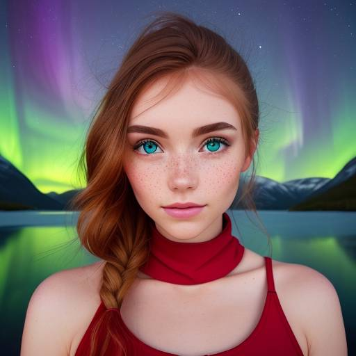
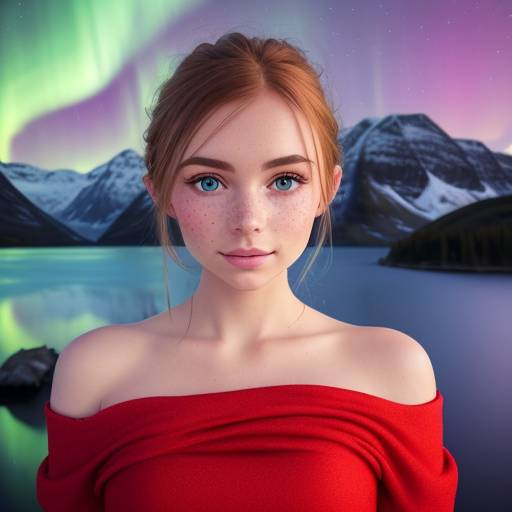
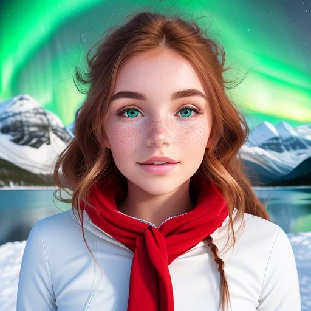

O Projeto Lily é um experimento de text-to-image criado por mim, que busca explorar o potencial da inteligência artificial (IA) na criação de imagens autênticas e envolventes para diversos fins, incluindo arte, entretenimento, jogos e publicidade.
Usando uma técnica desenvolvida com muitas horas de estudo e experimentação, o projeto gerou 1000 imagens diferentes de um personagem original chamado Lily sem a necessidade de uma imagem de base.
As imagens geradas são consistentes e de alta qualidade, demonstrando o poder da tecnologia text-to-image em criar novas formas de expressão visual. Este projeto representa um trabalho desafiador que demonstra minha habilidade em explorar as possibilidades da tecnologia de forma inovadora.
